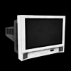

Voici une liste de tous les objets de source de lumière qui se trouvent dans les salles de classe :
 Fenêtre
Fenêtre
Facilement visibles même dans l'obscurité, les fenêtres peuvent être brisées au lance-pierre ou avec un pétard. Une fois brisées, les fenêtres laissent entrer un rayon de lumière dans toute la salle. Il est impossible de réparer les fenêtres et leur lumière reste indéfiniment dans toutes les salles d'énigme. Les fenêtres ne contribuent pas au compteur électrique car elles n'ont pas besoin d'électricité.
 Lampe
Lampe
La lampe peut être allumée ou éteinte, elle crée un cercle lumineux de taille moyenne autour de sa base. Chaque lampe doit être allumée et éteinte individuellement.
Télévision
La télévision ne peut pas être allumée directement. Le joueur doit trouver la télécommande pour l'allumer à distance. La télévision crée une petite sphère lumineuse directement devant l'écran. S'il y a plusieurs téléviseurs dans la salle, la télécommande permet de passer de l'un à l'autre.
 Écran d'ordinateur
Écran d'ordinateur
Les écrans d'ordinateurs sont reliés les uns aux autres sur le réseau. Si Jake allume un écran d'ordinateur, tous les autres écrans dans la salle s'allument également. C'est la même chose pour les éteindre. Pour cette raison, les écrans d'ordinateurs remplissent le compteur électrique rapidement. Les écrans d'ordinateurs se court-circuitent assez souvent. Si l'écran commence à clignoter, le joueur doit partir rapidement pour éviter d'être pris dans l'obscurité. Un seul écran d'ordinateur peut se court-circuiter à la fois. Il se rallume après quelques secondes.
Lampe oscillante
La lampe oscillante fonctionne un peu comme un ventilateur rotatif de table. Elle pivote d'avant en arrière lentement et s'arrête quelques secondes en bout de course avant de repartir dans l'autre sens. La lampe oscillante crée un grand faisceau dont la forme ressemble à celui de la lampe de Jake et qui peut atteindre l'autre côté de la salle. Lorsqu'une lampe oscillante est éteinte, puis rallumée, elle reprend sa course à l'endroit où elle était quand elle a été éteinte.
 Détecteur de mouvement
Détecteur de mouvement
Le détecteur de mouvement crée un énorme cercle de lumière à chaque fois que Jake ou un projectile s'en approche. Une fois activé, il reste allumé pendant 10 secondes avant de s'éteindre en clignotant. Une fois éteint, il est possible de le réactiver mais il n'est pas possible de le laisser allumer pendant plus de 10 secondes à la fois.